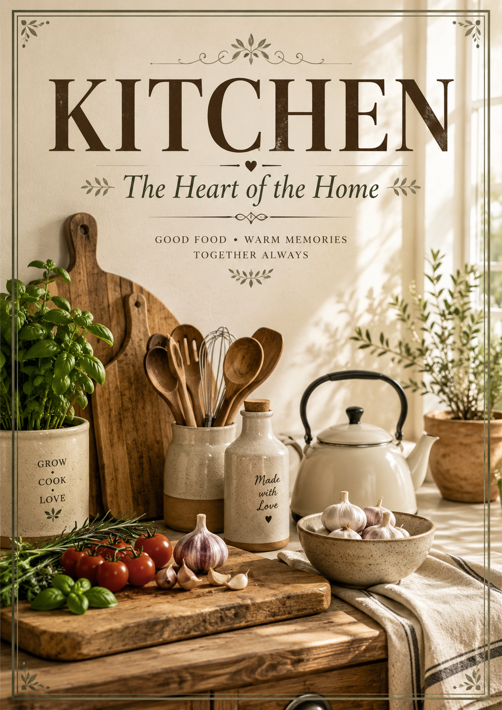
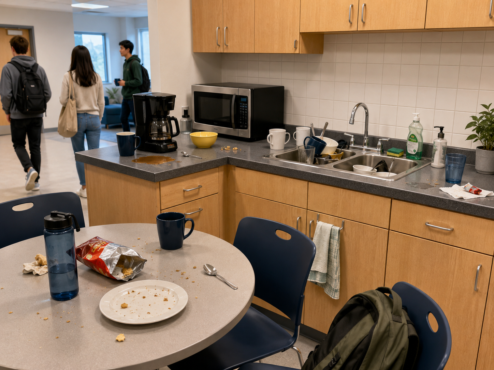
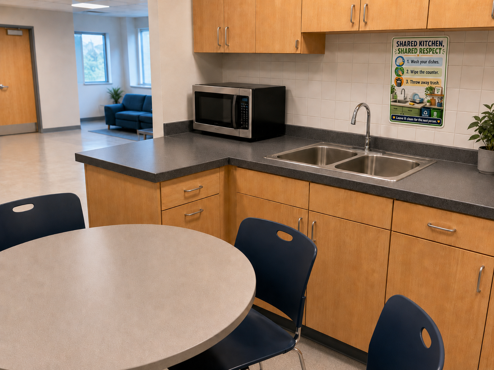
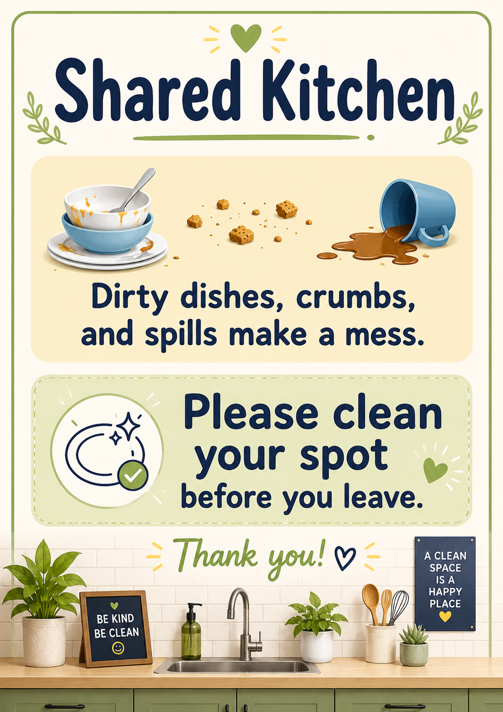
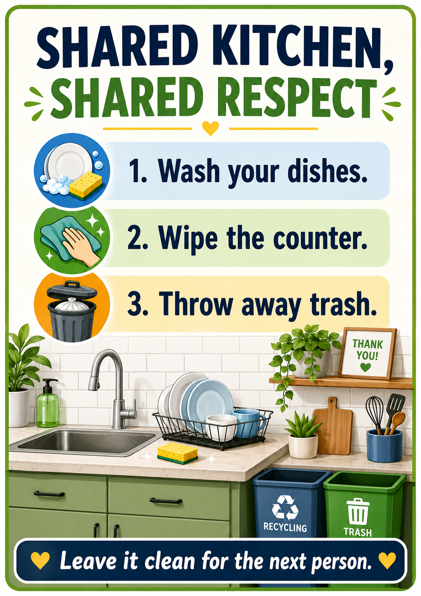

Prompt 1 Result
Short prompt

Duration: 2 hours
You are in: Lesson 2
Before this: Lesson 1
After this: Lesson 3
Workbook page: Student Workbook -> Lesson 2 - Prompt Practice and Vocabulary Log
In Lesson 1 you wrote your first safe English AI prompt and checked privacy settings. Today you will make visual prompts stronger. You will try small changes, compare poster and image results, and build your vocabulary log.
You can use an AI tool, a partner, or teacher-provided sample outputs. You do not need AI access to complete the workbook evidence.
A small change in your English can make a big change in a poster or image result. When you add context, limits, and a clear format, the result is easier to read and check. This lesson helps you practice prompt writing as an English skill.
Some exercises in the website version are interactive. You can type your answers directly on the page, and you can copy or download a backup if your teacher asks.
The main task is to write in the book, not to create separate files.
By the end of this lesson, you will:
Theme: Clear prompt changes improve AI answers and English practice.
AI Focus: CLEAR prompts for visual tasks and image result checks.
ESL Focus: Request language, imperatives, vocabulary logging, and reason-giving.
Content Objective: Students will write one CLEAR visual prompt and check one image result.
Language Objective: Students will explain prompt choices using simple English:
Prompt ___ was clearer because...
I added context about...
The image matches my prompt because...
I should verify...A visual prompt asks AI to create or describe an image, poster, flyer, or social media picture. A strong visual prompt gives the topic, audience, message, safety limits, and format.
Checking the image helps you ask:
Does the image match my prompt?
Is the message clear?
Is the image safe?
Is the text easy to read?Choose the word that matches each meaning and example sentence.
Not saved yet
My task is __________.
My audience is __________.
My message is __________.
My format is __________.
The image matches my prompt because __________.
One thing I should improve is __________.
One private detail I did not share is __________.| Time | Activity | Purpose |
|---|---|---|
| 10 min | Warm-up: review Lesson 1 safe prompt | Reuse and improve previous work. |
| 20 min | Mini-lesson: ZONI CLEAR review | Strengthen context, limits, format, ask, and review. |
| 25 min | Guided practice: three prompt variations | Model short, context-rich, and format-rich prompts. |
| 20 min | Output comparison | Compare AI or sample outputs safely. |
| 20 min | Independent practice: CLEAR visual prompt and vocabulary log | Choose a topic, write one full prompt, and save useful words. |
| 15 min | Pair speaking | Explain the image result and safety check. |
| 10 min | Reflection and exit ticket | Save the artifact and next step. |
Your mission is to help the kitchen team make a respectful cleanup poster. You will test three AI prompts and compare three poster results. Your job is to find the best poster: clear, friendly, safe, and strong enough to help everyone remember the shared kitchen rules.
Look at the kitchen before cleanup and after cleanup. The poster should help people move from the before picture to the after picture.
Visual goal
Use these images as context for the poster. In presentation mode, expand an image to discuss the details with the class.


Task:
Create a shared kitchen cleanup reminder poster.
Prompt 1 - short:
Create a kitchen poster.
Prompt 2 - more context:
Create a friendly poster for a shared kitchen.
The problem:
Message:
Limit:
Prompt 3 - clear format:
Context:
Limits:
Example or format:
Ask:
Review:
Compare the poster result for each prompt. If you do not have AI access, use these teacher-provided results.
Result summaries for reading and text-to-speech
Prompt results
Click each prompt to see the poster image it produced. Then compare clarity, safety, and format.
Short prompt

More context

Clear format

Discuss the three example prompts and poster results, then write your choice.
Write in the book. Your answers save on this device.
Not saved yet
Choose one visual problem. Then write one CLEAR prompt for a poster or image.
If you have AI access, create the image. If you do not have AI access, describe the image you want or use a teacher-provided sample. Your workbook evidence is your prompt and your image check, not the image file.
Future safety poster
Create a workplace poster that reminds employees to wear protective clothing before entering a dangerous work area.
Energy-saving office poster
Create a poster that reminds people to turn off lights, computers, and screens before leaving the office.
Before-and-after problem poster
Create a split poster that shows a messy or unsafe place on one side and the improved solution on the other side.
Family news social media image
Create a social media image that shares important news with family and friends. Do not include private details, addresses, ID numbers, documents, or faces without consent.
Celebration image
Create an inspiring celebration image for adult English learners finishing a course and reaching a future goal.
Copy this template. Replace the bracketed parts with your own safe details.
Context:
I want to create a [poster / social media image / celebration image].
The topic is [chosen topic].
The audience is [family, friends, classmates, workers, visitors, or community members].
The main message is: "[short message]".
Limits:
Use simple English.
Use a respectful and positive tone.
Do not include real names, addresses, ID numbers, private documents, or faces without consent.
Do not make the image scary, rude, or offensive.
Example or output format:
Create one [vertical poster / square social media image / celebration image].
Use one clear title.
Use 2-3 short lines of text.
Use bright, clear visuals.
Make the text easy to read.
Ask:
Generate the image.
Review:
Before creating the image, check that it is clear, safe, respectful, and free of private information.
Write directly in this workbook page. It is your Lesson 2 evidence.
Write directly in this workbook page.
Not saved yet
Explain your CLEAR prompt and image check to a partner.
My task is __________.
My audience is __________.
My message is __________.
The image shows __________.
One thing I should improve is __________.
One word I learned is __________.
I checked safety by __________.Write two short sentences:
Write two short sentences.
Not saved yet
Show your teacher:
Show your work and write one short safety sentence.
Not saved yet
Show your teacher: your CLEAR poster/image prompt and your image result and safety check.
Estimated time: 30-45 minutes.
This homework uses the same CLEAR visual prompt skill with your Lesson 1 future dream.
In Lesson 1, you created or planned a future dreams image. Now you will use that idea in a practical way.
Create one personal motivation poster for yourself. This poster will motivate you every day to work toward your future dream. You can use a short inspiring quote and images related to your dream. You might put this poster in a personal space, such as your room, desk, notebook, or study area.
Tasks:
Copy this template. Replace the blanks with your own safe details.
Context:
I want to create a personal motivation poster for myself.
My future dream is __________.
I want to put this poster in __________.
The poster should help me feel __________ every day.
Limits:
Use simple English.
Use a positive and respectful tone.
Do not include my full name, address, ID number, private documents, or real faces without consent.
Do not make the image scary, rude, or offensive.
Example or output format:
Create one vertical poster.
Include one short inspiring quote: "__________."
Use images related to my dream: __________.
Make the poster bright, hopeful, and easy to read.
Ask:
Generate a personal motivation poster for my future dream.
Review:
Before creating the poster, check that it is clear, safe, inspiring, and free of private information.
Write four short answers:
You can draft your homework in the same Lesson 2 workbook page, but your workbook answers save only on your device. To submit your homework, use email or the student portal. Follow your teacher’s instructions.
Your submission must include:
What to complete:
Vocabulary LogSend your homework by email or upload it to the student portal.
Your message must include:
Email or portal subject:
Lesson 2 Homework - My Future Dreams Motivation Poster
Message example:
Dear Teacher,
Here is my Lesson 2 homework.
My poster motivates me because __________.
My quote is __________.
My poster is safe because __________.
One thing I improved from Lesson 1 is __________.
Revised CLEAR prompt:
[paste your revised CLEAR prompt here]
Poster image or description:
[attach your poster image or describe the poster here]
Thank you,
[your first name]
Check:
Privacy reminder: Use your dream or goal, but do not add private details. Do not include your full name, address, ID number, school records, work documents, private family details, or real faces without consent.
Quote reminder: Use your own short quote or a short common phrase. Do not copy a long quote, poem, song lyric, or private message.
Optional extension: Try the Lessons 1-2 Prompt Playground lab with safe sample text.
This lab is optional. Use it only if your teacher asks or if you want extra practice. You do not need to complete the lab to finish your portfolio.
Open the Lessons 1-2 Prompt Playground lab in Colab:
Use safe examples only. Do not enter private information.
The lab uses Colab AI automatically when it is available in the Colab runtime. If Colab AI is not available, the regular lab steps still work, and you can finish your portfolio without AI.
After any AI answer, say: “I checked the AI answer before I used it.”
Complete this workbook evidence:
Student Workbook -> Lesson 2 - Prompt Practice and Vocabulary Log